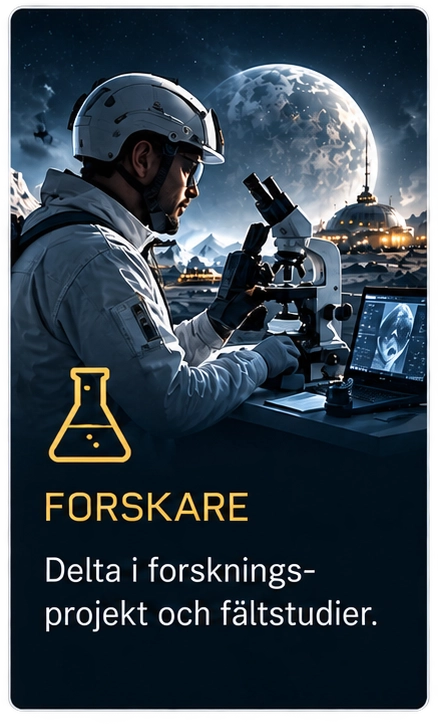
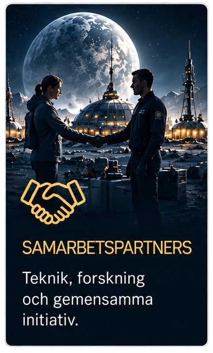
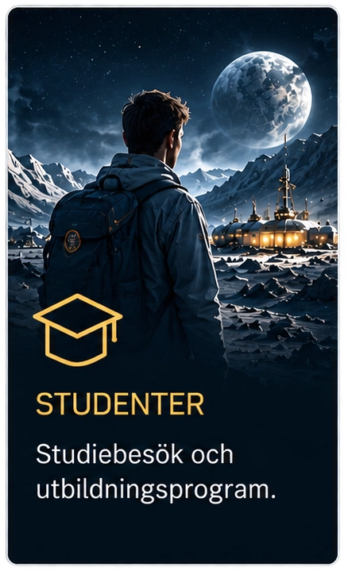
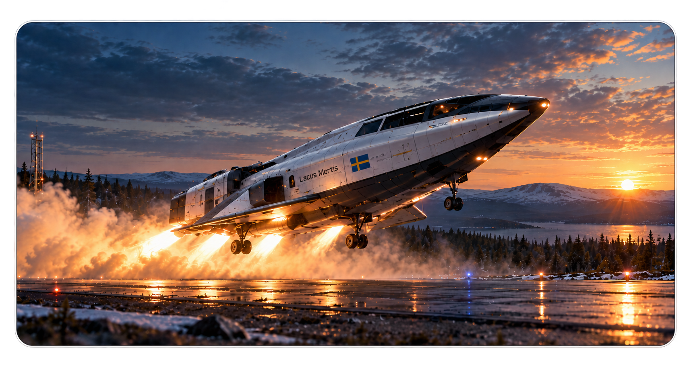
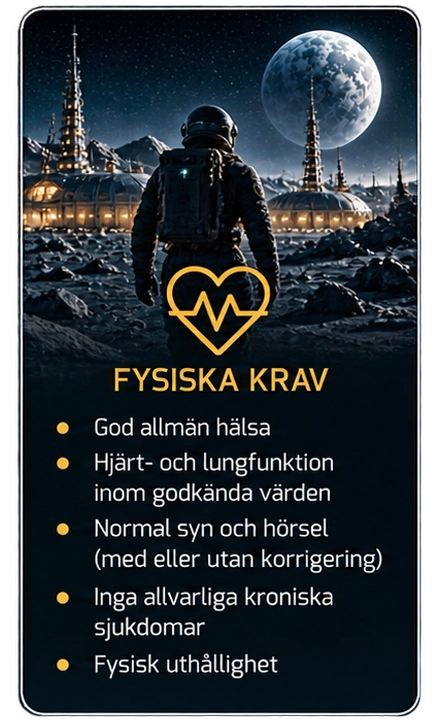
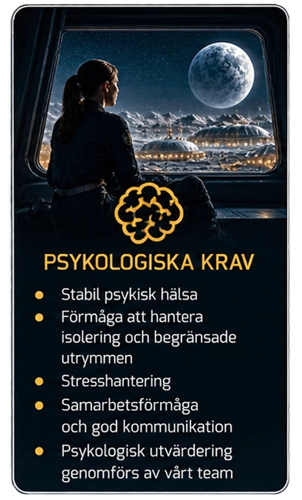
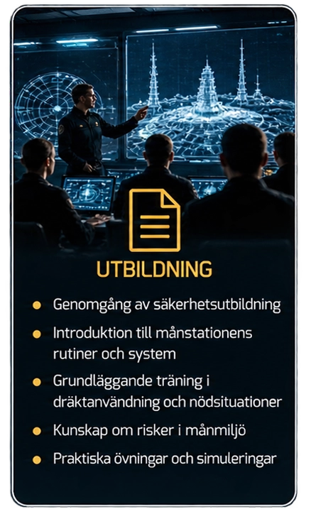
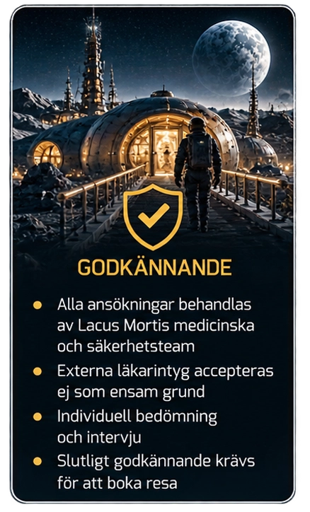

Vi välkomnar forskare, samarbetspartners, studenter och utvalda sponsorer som vill besöka eller delta i projekt vid vår anläggning på Lacus Mortis.




Din resa till Lacus Mortis börjar vid vår svenska rymdbas på jorden. Ombord på vår svenskutvecklade rymdfärja, konstruerad med säkerhet och komfort i fokus, lämnar du jordens atmosfär och går in i omloppsbana. Här genomför färjan ett helt varv runt jorden, med en spektakulär utsikt över kontinenter, världshav och vår blå planet.
Därefter accelererar vi mot månen. Under den cirka 48 timmar långa färden får du uppleva tyngdlöshet och se hur jorden långsamt krymper bakom dig, medan månlandskapet växer fram framför oss.
Vid ankomsten går färjan in i månens omloppsbana innan den påbörjar sin kontrollerade nedstigning mot Lacus Mortis. Resan avslutas med en mjuk landning vid forskningsanläggningen, där vårt team välkomnar dig.
Hela färden övervakas av vår erfarna besättning och markkontroll, med din säkerhet som högsta prioritet.
Att resa till Lacus Mortis ställer exceptionellt höga krav på varje deltagare. Rymdens extrema miljö innebär stora fysiska och psykiska påfrestningar, där säkerheten aldrig får kompromissas. Därför krävs omfattande hälsokontroller, psykologiska bedömningar och obligatorisk säkerhetsutbildning med praktiska övningar.
Varje resenär måste vara förberedd på isolering, stress och oförutsedda situationer.
Inga undantag görs från våra säkerhetskrav.
Att lämna jorden kräver ansvar, disciplin och respekt för rymdens utmaningar.



